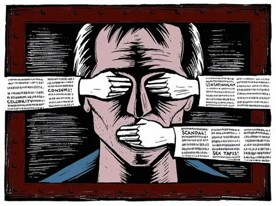
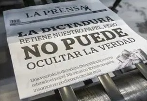
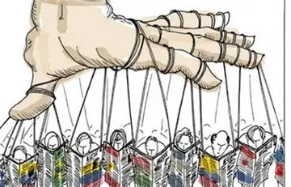
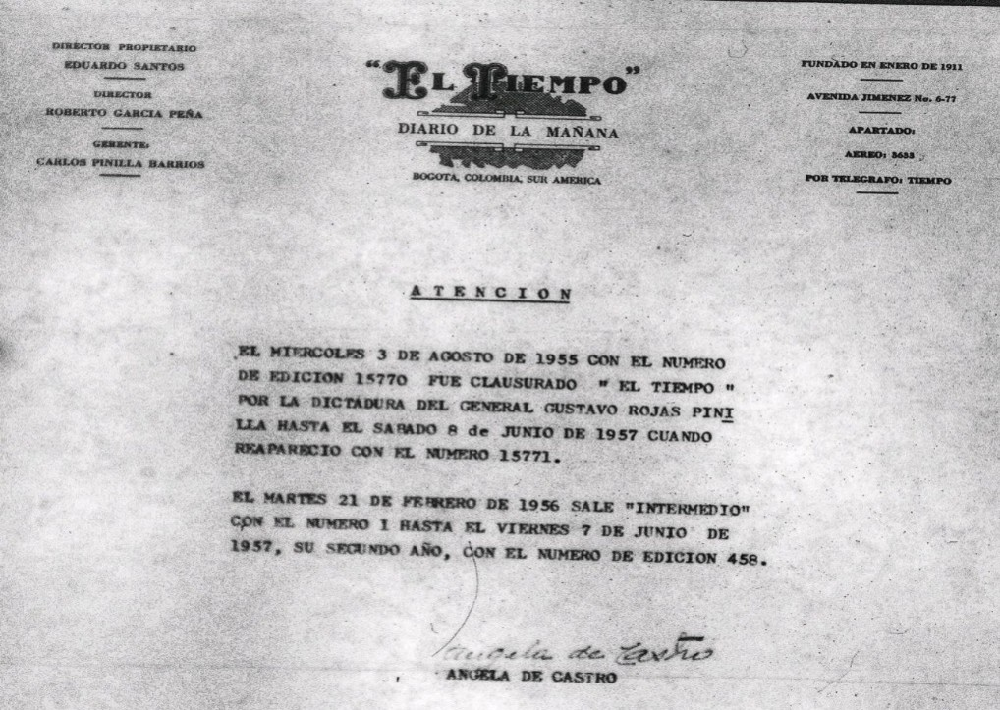
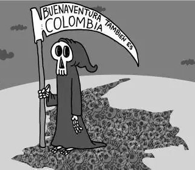
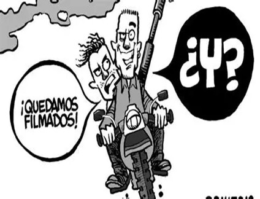
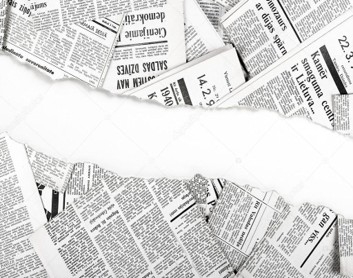
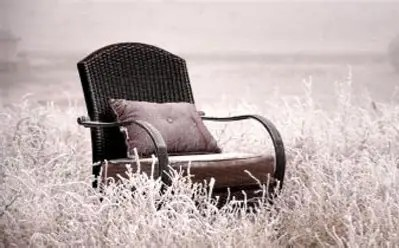
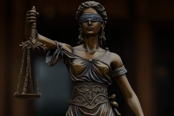

1. De ayer a hoy: ¿Ha cambiado la censura o simplemente han cambiado sus formas?

Ilustración allegórica a la censura y la desinformación.
La censura, tanto en el pasado como en la actualidad, suele estar relacionada con intereses políticos y económicos que buscan influir en la información que recibe la población. En este sentido, es preocupante que continúen existiendo debates sobre las presiones que pueden enfrentar periodistas y medios de comunicación cuando expresan posiciones críticas frente a quienes ejercen el poder.
Es por ello que la sociedad tiene un acceso limitado a información diversa y confiable, lo que puede generar desinformación o interpretaciones incompletas sobre los acontecimientos políticos, sociales y culturales del país. Por esta razón, la libertad de prensa constituye uno de los pilares fundamentales de una sociedad democrática, ya que permite que los ciudadanos conozcan diferentes perspectivas sobre una misma realidad.

Titular histórico: "La dictadura retiene nuestro papel, pero no puede ocultar la verdad".
Un ejemplo reciente de esta discusión ha sido el caso de periodistas como Camila Zuluaga, Ana Cristina Restrepo y Vladdo, cuyas salidas de distintos espacios informativos generaron cuestionamientos y debates en torno a la independencia de los medios de comunicación. Diversos sectores han planteado que estas situaciones podrían estar vinculadas a las críticas que estas comunicadoras realizaron frente al gobierno de Abelardo de la Espriella, lo que ha reavivado la discusión sobre la libertad de prensa, la censura y la autocensura en Colombia.
Todo esto nos lleva a reflexionar sobre cómo, a lo largo de la historia, distintos grupos de poder han intentado influir en el control de la información para favorecer determinados intereses o limitar la difusión de hechos que la ciudadanía debería conocer. Por ello, estudiar la censura periodística no solo permite comprender mejor algunos acontecimientos del siglo XX colombiano, sino también analizar cómo esta problemática sigue siendo objeto de debate en la actualidad.
2. Si la prensa no puede criticar al gobierno, ¿quién puede vigilar el poder?

Caricatura sobre la manipulación y el control de la información.
Tras varios años de fuerte polarización política y hechos tan impactantes como el Bogotazo de 1948, Colombia atravesaba una profunda crisis social y política. En medio de este contexto, el 13 de junio de 1953, el general Gustavo Rojas Pinilla llegó al poder mediante un golpe de Estado, con la promesa de devolver la estabilidad al país bajo el lema de "Paz, Justicia y Libertad".
A diferencia de los gobiernos anteriores, Rojas Pinilla no representaba de manera directa a uno de los partidos políticos tradicionales. Su administración se apoyó en el poder de las Fuerzas Militares y promovió diversas reformas económicas, sociales y de infraestructura que buscaban modernizar el país. Sin embargo, con el paso del tiempo, las características autoritarias de su gobierno comenzaron a hacerse más evidentes, especialmente en su relación con los medios de comunicación.
Durante su mandato, se impusieron controles cada vez más strictly sobre la prensa. Los periódicos y periodistas que expresaban opiniones críticas podían ser sancionados o presionados por el gobierno. Uno de los casos más representativos fue el del periódico El Tiempo, uno de los medios más influyentes de la época. A pesar de las restricciones impuestas por el gobierno, sus periodistas continuaron publicando artículos, opiniones y caricaturas que cuestionaban las decisiones políticas del presidente y alertaban sobre los riesgos de concentrar demasiado poder en una sola persona.

Aviso histórico de la clausura de El Tiempo el 3 de agosto de 1955 por la dictadura de Rojas Pinilla.
La situación alcanzó su punto más crítico en 1955, tras la muerte del periodista liberal Emilio Correa Uribe y de su hijo. Mientras que la versión oficial afirmaba que ambos habían fallecido en un accidente de tránsito, diferentes fuentes periodísticas sostenían que podrían haber sido asesinados por un grupo conocido como "Los Pájaros", organización señalada por actos de violencia política durante aquella época. Cuando El Tiempo publicó información que contradecía la versión del gobierno, la tensión entre el periódico y el presidente aumentó considerablemente.
Como consecuencia de este enfrentamiento, el gobierno de Rojas Pinilla ordenó la clausura de El Tiempo, que permaneció cerrado desde agosto de 1955 hasta junio de 1957. Este hecho se convirtió en uno de los ejemplos más importantes de censura periodística en la historia colombiana, pues demostró cómo un gobierno podía utilizar su poder para silenciar a un medio que cuestionaba sus decisiones.
3. ¿Qué ocurre cuando decir la verdad se convierte en una sentencia de muerte?

Caricatura: "Buenaventura también es Colombia".
Aunque la censura ha sido una de las principales herramientas utilizadas para limitar la libertad de prensa en Colombia, no ha sido la única. A lo largo de la historia, distintos actores al margen de la ley también han intentado silenciar a periodistas y medios de comunicación cuando la información divulgada afectaba sus intereses. Entre estos grupos, el narcotráfico logró acumular un enorme poder económico y una gran influencia sobre diversos ámbitos de la sociedad colombiana.
Cuando una organización concentra tanto poder, suele buscar también el control de la información. Por esta razón, las voces críticas que denunciaban sus acciones se convirtieron en un obstáculo. Uno de los periodistas que más firmemente se opuso al narcotráfico fue Guillermo Cano Isaza, director del periódico El Espectador, reconocido por sus constantes denuncias sobre el impacto que los carteles de la droga estaban teniendo en la política, la economía y la vida cotidiana del país.
La noche del 17 de diciembre de 1986, Guillermo Cano Isaza fue asesinado cuando salía de las instalaciones de El Espectador en Bogotá. Mientras se desplazaba en su vehículo, fue atacado por hombres armados que se movilizaban en una motocicleta y que le dispararon en repetidas ocasiones. Las heridas causadas por el atentado acabaron con su vida pocas horas después. Con este crimen, los responsables buscaban silenciar una de las voces periodísticas más influyentes y críticas de Colombia.
La noticia conmocionó al país. No solo había sido asesinado un periodista, sino también un símbolo de la libertad de expresión y de la lucha por informar con independencia. Para muchos colombianos, la muerte de Cano representó una demostración del enorme poder que el narcotráfico había alcanzado y de los riesgos que enfrentaban quienes se atrevían a denunciarlo públicamente.

Caricatura sobre la impunidad frente a los crímenes contra la prensa.
Sin embargo, el legado de Guillermo Cano Isaza no terminó con su asesinato. Su trabajo se convirtió en un recordatorio de que el periodismo cumple una función esencial en la defensa de la democracia. Su historia demuestra que la censura no siempre aparece en forma de leyes o prohibiciones; en ocasiones, se manifiesta mediante la intimidación y la violencia contra quienes buscan informar a la sociedad. Cuando una voz crítica es silenciada, la pérdida no es únicamente para el periodismo, sino para todos los ciudadanos que tienen derecho a conocer la verdad.
4. Cuando una voz que informa es silenciada, ¿qué pierde la comunidad que representaba?

Imagen simbólica sobre la ruptura de la libertad de prensa.
A lo largo de la historia, el periodismo ha sido una de las profesiones más expuestas a la violencia, las amenazas y la censura. Aunque muchos de estos hechos parecen pertenecer al pasado, la realidad demuestra que quienes informan y representan las necesidades de sus comunidades continúan enfrentando riesgos importantes en diferentes regiones del país.
Durante el año 2026 se han registrado diversos hechos de violencia contra periodistas y comunicadores sociales en Colombia. Uno de los casos más recientes y preocupantes fue el de Julián Andrés Hincapié, joven comunicador comunitario y líder social del municipio de Anorí, en Antioquia. Su trabajo se enfocaba en visibilizar las problemáticas de su territorio, especialmente aquellas relacionadas con el conflicto armado, las necesidades de las comunidades rurales y la minería artesanal que sustenta la economía de muchas familias de la región.
Según la información conocida hasta el momento, Julián Andrés Hincapié fue visto por última vez el 10 de septiembre de 2026 cuando salió hacia una zona rural acompañado de un vecino. Semanas después, el 2 de octubre, su cuerpo fue hallado en estado de descomposición en el sector de La Chinca, cerca del municipio de Anorí. Ante este hecho, organizaciones como la Fundación para la Libertad de Prensa (FLIP), la Defensoría del Pueblo y la Procuraduría solicitaron a las autoridades una investigación exhaustiva para esclarecer las circunstancias de su muerte y determinar si esta tuvo alguna relación con su labor como comunicador comunitario.

Simbolismo de la ausencia y las voces silenciadas en las regiones rurales.
Más allá de las conclusiones que puedan arrojar las investigaciones, este caso invita a reflexionar sobre la importancia de quienes ejercen la comunicación en lugares alejados de los grandes centros urbanos. Cuando desaparece una voz que informa sobre los problemas de una comunidad, no solo se pierde a una persona; también se debilita un canal mediante el cual los ciudadanos pueden expresar sus preocupaciones, denunciar injusticias y hacer visibles situaciones que muchas veces pasan desapercibidas para el resto del país.
La muerte de Julián Andrés Hincapié también pone en evidencia la necesidad de fortalecer las garantías de seguridad para periodistas, líderes sociales y comunicadores comunitarios. Una democracia necesita que quienes investigan, informan y representan a sus comunidades puedan realizar su labor sin miedo ni amenazas. De lo contrario, el acceso a la información y la participación ciudadana pueden verse seriamente afectadas, especialmente en aquellos territorios donde las dificultades sociales y los conflictos siguen siendo una realidad cotidiana.
5. La realidad en torno a la transformación de la censura y la violencia periodística en Colombia
La historia no existe únicamente para recordar los hechos que ocurrieron en el pasado. También nos permite cuestionar, relacionar, comparar y analizar cómo ciertos fenómenos se transforman con el paso del tiempo.
En esta primera gráfica podemos observar que la censura no ha sido el único problema que ha afectado a la prensa colombiana. A lo largo de los años, las agresiones contra periodistas han adoptado diferentes formas, desde amenazas y ataques físicos hasta asesinatos.
En esta segunda gráfica no solo podemos analizar cómo han cambiado las formas de violencia contra periodistas, sino también cómo la transformación tecnológica ha influido en estas dinámicas.
En esta tercera gráfica es posible observar que la violencia contra periodistas no se distribuye de manera uniforme en todo el territorio nacional, concentrándose un 75% en regiones y municipios apartados.
Departamentos como Cauca, Nariño, Norte de Santander, Córdoba y Arauca han sido escenarios de múltiples problemáticas relacionadas con la violencia y la inestabilidad social. Estas condiciones aumentan los riesgos para quienes ejercen labores de comunicación y periodismo, especialmente cuando informan sobre temas relacionados con el conflicto armado, la corrupción, las economías ilegales o las necesidades de las comunidades locales. Por ello, resulta importante comprender que la protección de la libertad de prensa no depende únicamente del desarrollo tecnológico. También requiere una formación ética y ciudadana que promueva el respeto por las diferencias de opinión y el valor de la información verificada. De lo contrario, las herramientas tecnológicas pueden convertirse en instrumentos que afecten la reputación, la seguridad y el bienestar de quienes ejercen la labor periodística.
En conclusión, las cifras muestran que la violencia contra la prensa no ha desaparecido; simplemente ha cambiado de forma. Comprender esta transformación es fundamental para reconocer por qué la libertad de expresión sigue siendo uno de los pilares más importantes de una sociedad democrática.
Línea de Tiempo Interactiva (Evolución Histórica)
13 de Junio de 1953 - Golpe de Estado
El general Gustavo Rojas Pinilla llega al poder mediante un golpe de Estado con la promesa de devolver la estabilidad bajo el lema "Paz, Justicia y Libertad".
Mapa Interactivo: Zonas de Silencio
6. ¿Comienza la censura cuando se prohíbe hablar o cuando se castiga a quien se atreve a hacerlo?

Estatua de la justicia con los ojos vendados.
A lo largo de mi vida he intentado que las cosas sean transparentes y verdaderas, inculcando valores que van en contra de lo que está establecido o de lo que la mayoría considera correcto. Aunque para muchas personas esto pueda parecer extraño, para mí ocurre todo lo contrario. La verdad tiene una característica muy particular: suele incomodar. Y precisamente por eso es tan importante.
Creo que la prensa tiene esa misma labor. Aunque sea una tarea difícil, peligrosa e incluso arriesgada, considero que vale la pena dedicar una vida a buscar que las personas reciban la información de una manera real y completa. No basta únicamente con conocer los hechos; también es necesario comprenderlos, cuestionarlos y dejar que nos incomoden cuando sea necesario. La información pierde valor cuando solo busca agradar y no cuando invita a reflexionar.
Sin embargo, la prensa también ha tenido vacíos, vacíos claros y contundentes que han contribuido a formar ciudadanos incapaces de replantearse sus ideas, de criticar, de transformarse y de detenerse para evitar repetir errores del pasado. Y aunque esta situación no puede explicarse a partir de un único acontecimiento histórico, estoy convencida de que gran parte de lo que vivimos hoy hace parte de una cadena de errores que como sociedad no hemos sabido corregir. Lo preocupante es que, aun cuando los estamos repitiendo, muchas veces preferimos ignorarlos.
Como jóvenes, constantemente escuchamos que somos el futuro, que debemos ser mejores y construir un país diferente. Sin embargo, pocas veces se nos dice que parte de esa responsabilidad consiste en incomodar, cuestionar y señalar aquello que resulta problemático dentro de la sociedad. Vivimos en una cultura que, en ocasiones, espera que aceptemos las cosas tal y como son. Desde la educación aprendemos a respetar las reglas, pero rara vez nos enseñan a preguntarnos por qué existen, cómo surgieron o si realmente siguen siendo justas.
Ilustración sobre el rechazo social al cuestionar lo establecido.
Porque sí, una regla está hecha para cumplirse. Pero también creo que está hecha para ser cuestionada cuando deja de responder a las necesidades de las personas.
Por eso considero que la prensa es una labor digna de admiración, especialmente en sus inicios. A lo largo de la historia, muchos periodistas se han enfrentado a la censura, la violencia y el rechazo por el simple hecho de informar. Sin embargo, también creo que en la actualidad parte de la prensa ha perdido credibilidad ante muchos ciudadanos. En ocasiones parece olvidar que su función principal no es decirles a las personas qué deben pensar, sino ofrecerles información objetiva que les permita construir sus propias opiniones y decidir por sí mismas qué postura adoptar frente a la realidad.
Creo que la historia vale la pena repensarla. Creo que la prensa nos ayuda a volver sobre ella para comprenderla mejor. Creo que la verdad no debería esconderse ni convertirse en un privilegio al que solo unos pocos puedan acceder. Creo que la información debe circular libremente y que cada persona tiene el derecho de conocer diferentes perspectivas para formar sus propias conclusiones. Y sobre todo, creo que la libertad es el principio más importante para construir una prensa verdaderamente comprometida con la verdad y con la sociedad.
7. Material Audiovisual de Apoyo
Haz clic en el siguiente botón para ver la presentación interactiva y el video del proyecto directamente en Canva: